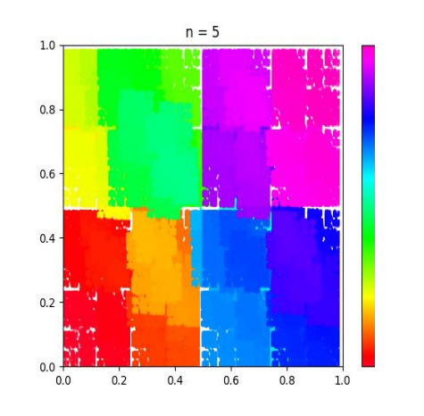
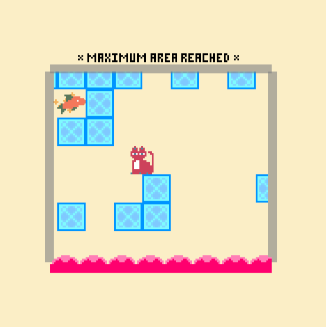
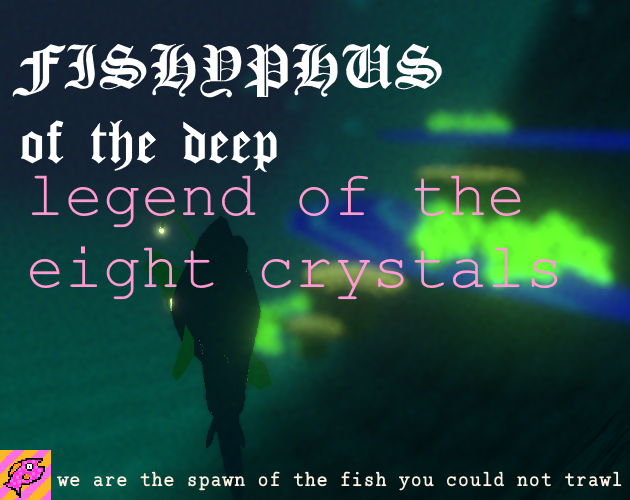
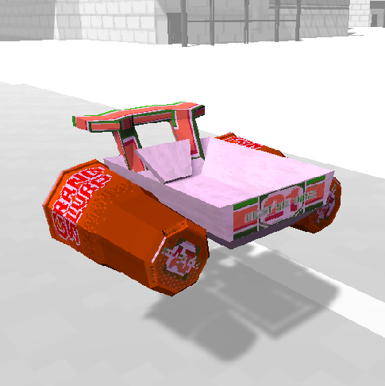
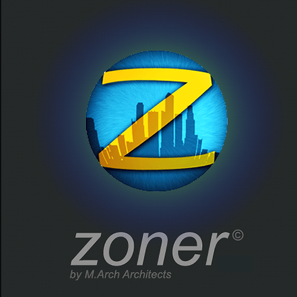

A single-page web tool that pulls live data from any public GitHub repository via the GitHub REST API and generates a ranked breakdown of top contributors, PR activity, and issue statistics. Built to be hosted as a standalone HTML file with no dependencies.

A master's thesis titled "A Walk Along a Space-Filling Curve" investigating the analytic properties of space-filling curves, investigated as the accumulators of iterated function systems. This work involved a substantial amount of programming done in Python, gathering data for a full-length research paper written in LaTeX. Both the paper and the code can be found here.

A platformer spawned from Ludum Dare Game Jam #54. This game sees the player as Squingus, a charming but troubled cat, navigate the world from inside its box in a challenging and creative platforming adventure. Won 16th out of over 1,000 submissions for innovation.

A collectathon-style game spawned from Ludum Dare Game Jam #52. The player, a sockeye salmon, ventures into the dangerous ocean to bring back the legendary eight gems and turn the tide on the trawling nets that dredge The Deep.
A structured summer project at the University of St Andrews aimed at producing a tool to educate students on sustainability. This involved working with a team to research and develop a JavaScript app to form part of the university's curriculum on sustainability.

A refreshing take on the racing game genre, heavily inspired by Kirby Air Ride's City Trial mode. Players compete in a variety of racing challenges — drag races, agility courses, and long-distance jumps — in randomly spawned vehicles, collecting power-ups along the way to prepare for the final race.

An NYC zoning app that makes the city's incredibly complex building code understandable to developers. I used Ruby on Rails to build the backend of the application — specifically the components that query public databases and parse that information into the product.
Won second place nationally in the Exploravision science research paper competition (Grades 10–12) for "Using Carbon Nanospheres to Reduce Decoherence in Quantum Computing Systems." The paper investigates the electromagnetic stability of carbon nanospheres — a feature essential to practical quantum computing.